이것은…
가끔 구름이라 불린다.
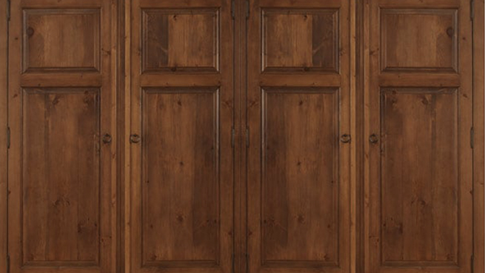
누군가의 옷장 속에서 발견된다.
땅 위에도 있고 바닷속에도 있다.
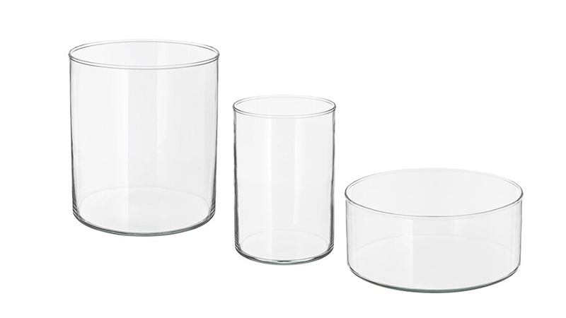
빗물을 모은다.
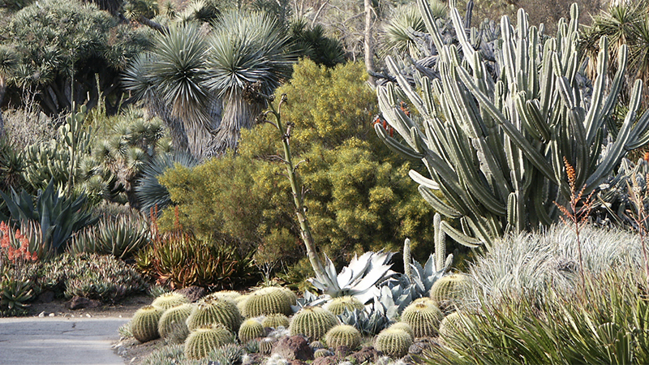
미국 서부에 가뭄을 악화시킨다.
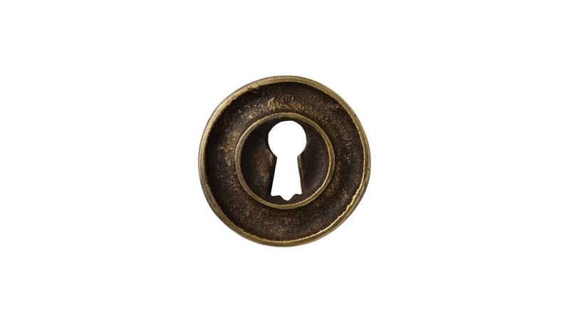
무수한 비밀을 가지고 있다.
바지 주머니에 보관할 수 있다.
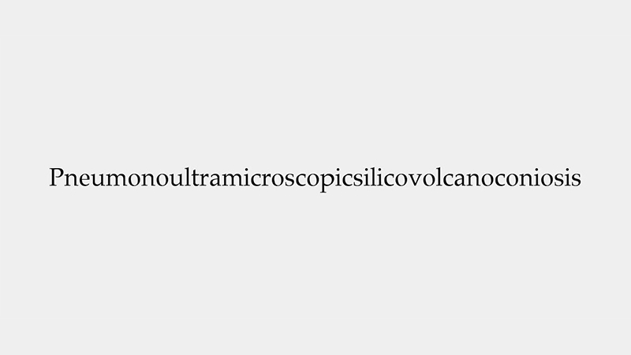
세상에서 가장 긴 단어가 무엇인지 알려준다.
뜨겁거나 미지근하다.
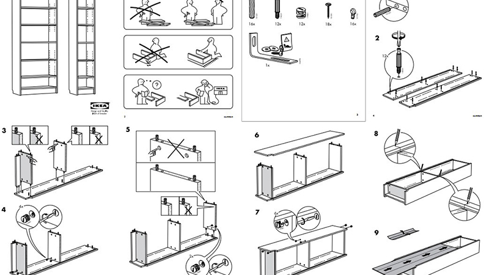
가구처럼 조립이 가능하다.
길 잃은 여행객을 도와준다.
남극에도 있고 춘천에도 있다.
귀가 멍멍해질 정도로 시끄럽다.
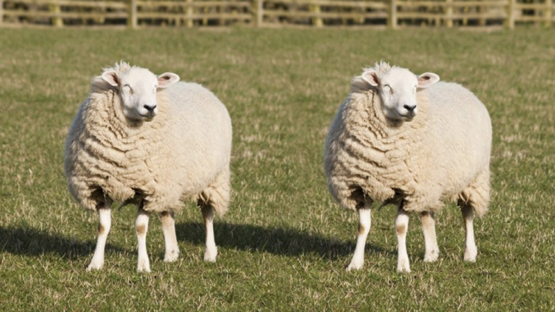
복제 가능하다.
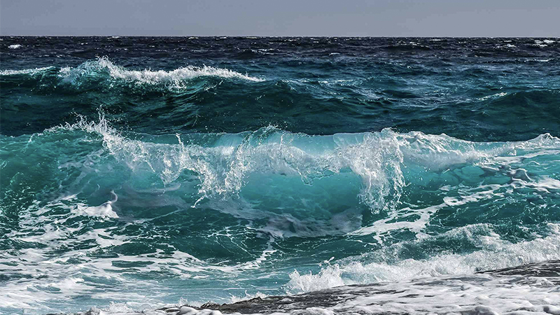
쉬지 않는다.
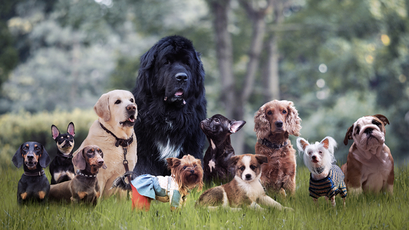
개의 종류만큼 크기가 다양하다.
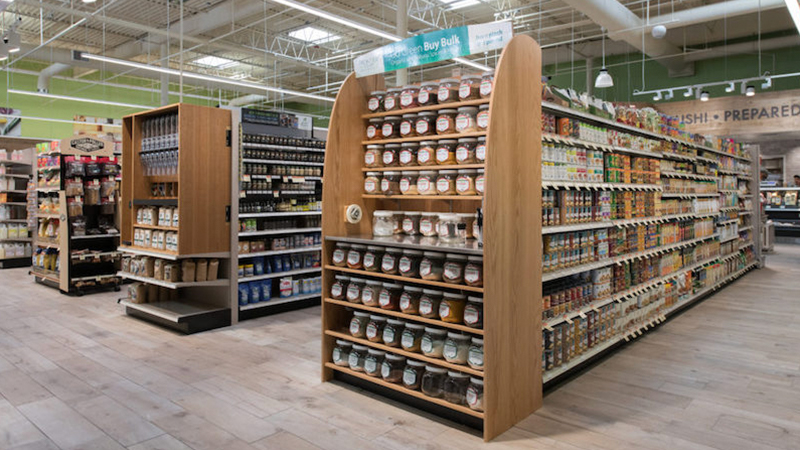
대형 마트처럼 복도를 여러 개 가지고 있다.
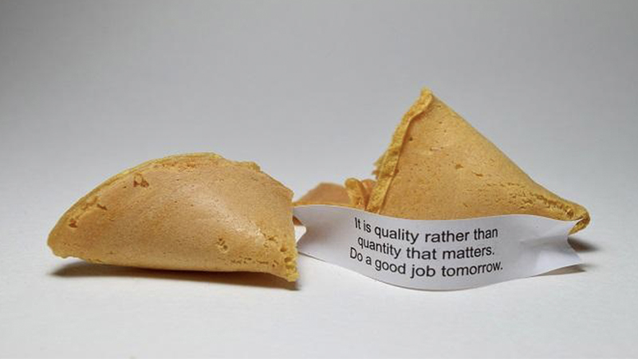
숨겨져 있다.
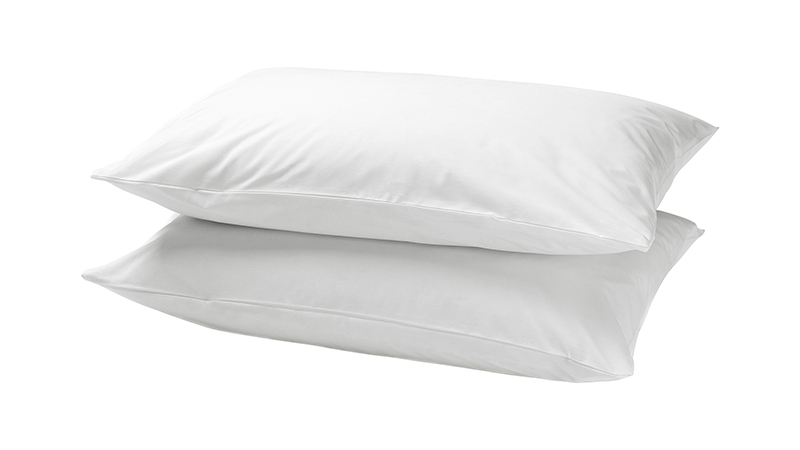
배게와 베개 중 올바른 맞춤법을 알려준다.
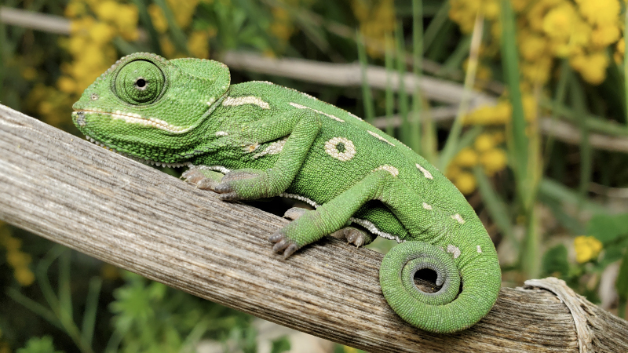
파충류처럼 온도와 습도에 예민하다.
서로 연결되어 있다.
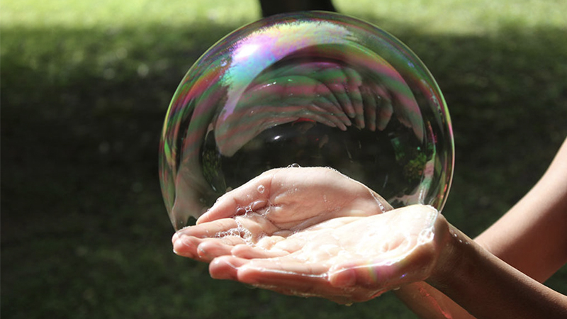
손바닥 위에 올려놓을 수 있다.
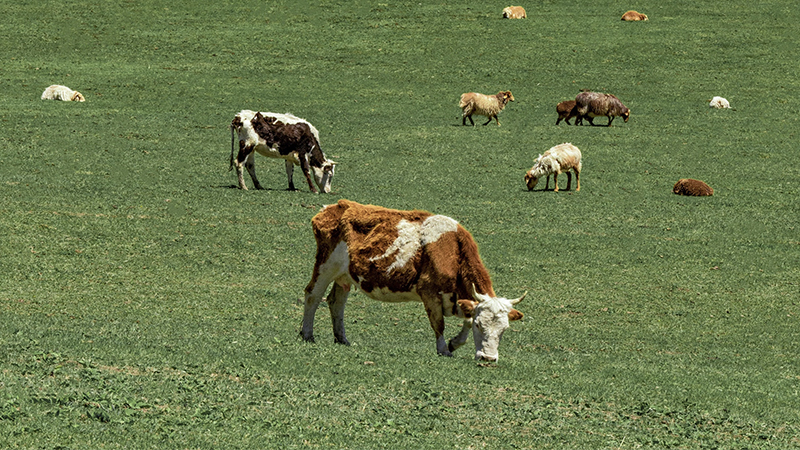
가끔 농장이라 불린다.
밟으면 부서진다.
크리스마스 캐롤을 재생한다.
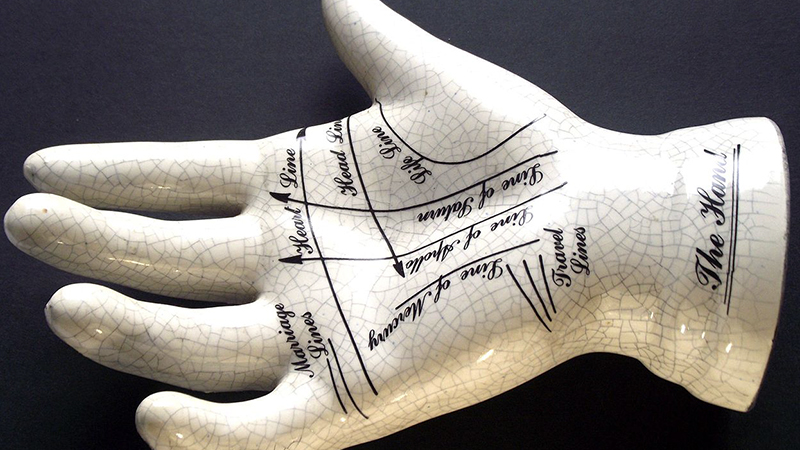
미래를 예언한다.
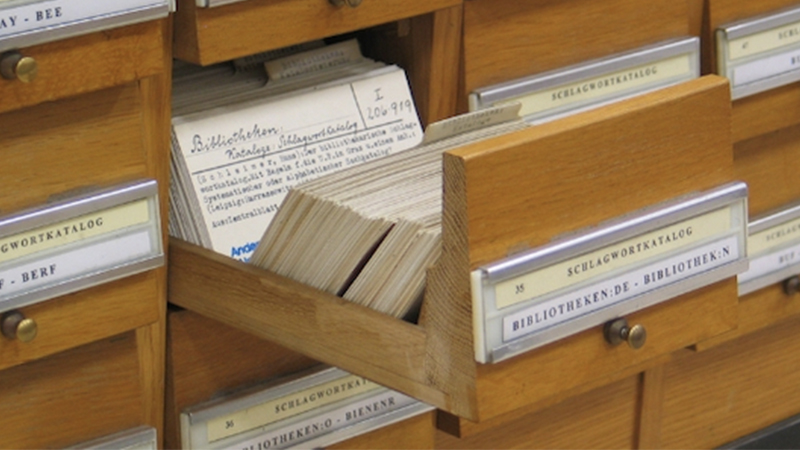
수많은 서랍을 가지고 있다.
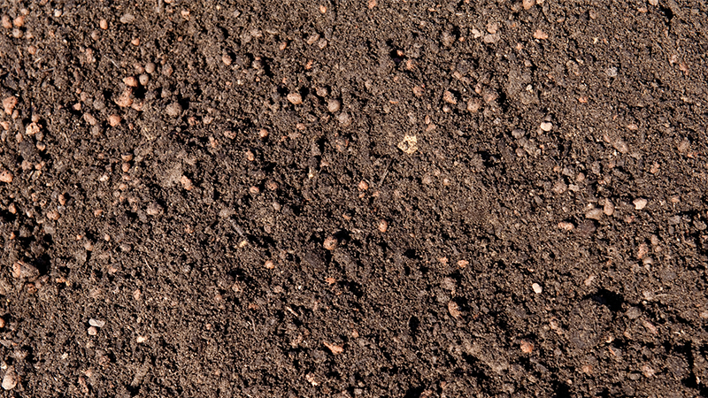
상추를 키운다.
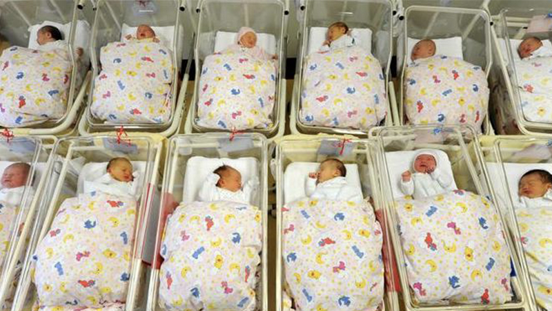
이름을 수집한다.
테러의 위험이 있다.
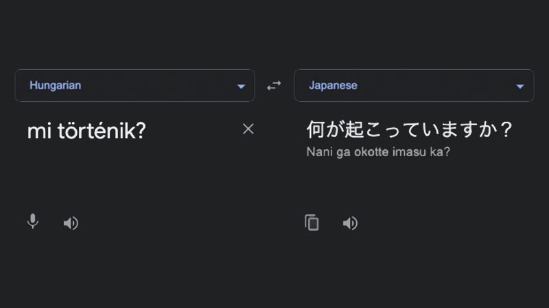
헝가리어를 일본어로 바꾼다.
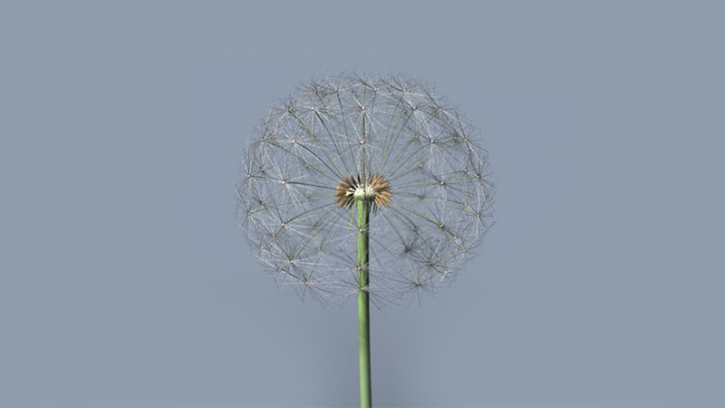
모든 종류의 소식을 전달한다.
물이 필요하다.